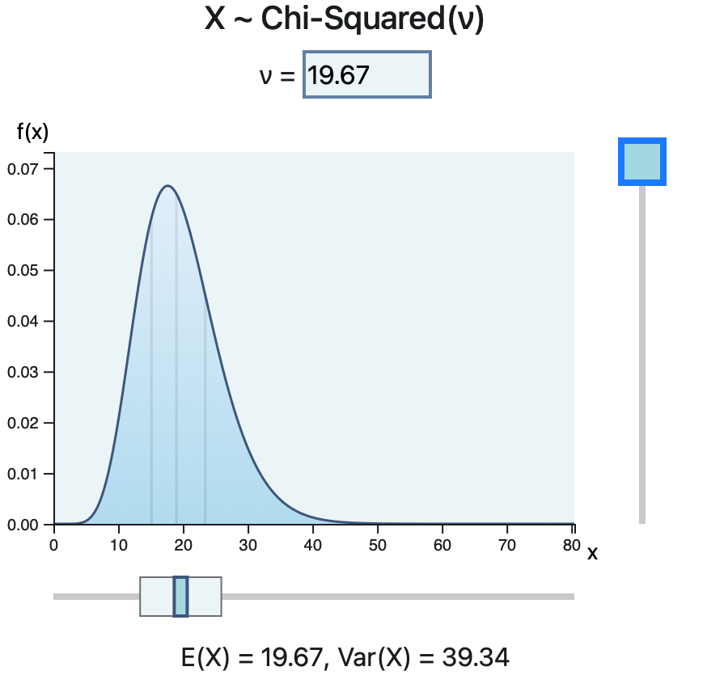

This page covers the concepts of Chapters 1–4, which are overviews of introductory probability concepts useful for anyone working with data.
The binomial distribution models the number of “successes” observed in \(n\) independent trials, each with success probability \(p\).
\[
P(X=x)=\binom{n}{x}p^{x}(1-p)^{\,n-x},\quad x=0,1,\dots,n
\]
Mean = \(np\), Var = \(np(1-p)\)
The Poisson distribution describes counts of events that occur randomly through time or space at an average rate \(\lambda\).
\[
P(X=x)=\dfrac{e^{-\lambda}\lambda^{x}}{x!},\quad x=0,1,2,\dots
\]
Mean = \(\lambda\), Var = \(\lambda\)
It is often used as an approximation to the binomial distribution when \(n\) is large and \(p\) is small.
A uniform distribution assigns equal probability density to all values between \(a\) and \(b\).
\[
f(x)=\begin{cases}
\frac{1}{b-a}, & a \le x \le b,\\[6pt]
0, & \text{otherwise}
\end{cases}
\]
Mean = \( \frac{a+b}{2} \), Var = \( \frac{(b-a)^2}{12} \)
The normal distribution is the famous “bell curve,” fully determined by mean \(\mu\) and variance \(\sigma^2\). Many natural phenomena and statistical methods rely on it.
\[
f(x)=\frac{1}{\sqrt{2\pi\sigma^2}}
\exp\!\left(-\frac{(x-\mu)^2}{2\sigma^2}\right)
\]
Mean = \( \mu \), Var = \( \sigma^2 \)
A chi-square distribution arises as the distribution of a sum of squared standard normal variables. It is widely used in inference for variance estimates and tests of independence.
\[
f(x)=\frac{1}{2^{k/2}\Gamma(k/2)} x^{k/2 - 1} e^{-x/2},\qquad x>0
\]
Mean = \(k\), Var = \(2k\)
There are many resources to help visualize these distributions!

Click the image to visit the “Probability Playground.”
If \(X_1, X_2, \dots, X_n\) are independent and identically distributed with \(\mathbb{E}[X_i]=\mu\) and \(\mathrm{Var}(X_i)=\sigma^2 < \infty\), then their sample mean
\[ \bar{X}_n = \frac{1}{n}\sum_{i=1}^{n} X_i \]becomes approximately normal as \(n\) becomes large:
\[ \frac{\bar{X}_n - \mu}{\sigma / \sqrt{n}} \;\xrightarrow{d}\; \mathcal{N}(0,1) \]The CLT explains why averages tend to form bell-shaped curves, even when the underlying distribution is not normal! The image below links to a website that allows you to play around with distributions and their averages.
A confidence interval gives a range of plausible values for an unknown population parameter (such as a mean). To clear up any common confusions: A \(95\%\) CI does not mean there is a 95% chance the true parameter is inside your specific interval. It means that if you repeatedly collected data and built new intervals, about 95% of those intervals would contain the TRUE value.
General form:
\[ \text{estimate} \;\pm\; (\text{critical value}) \times (\text{standard error}) \]Examples: • CI for a mean with known variance: \[ \bar{X} \pm z_{\alpha/2}\,\frac{\sigma}{\sqrt{n}} \] • CI for a proportion: \[ \hat{p} \pm z_{\alpha/2}\,\sqrt{\frac{\hat{p}(1-\hat{p})}{n}} \]
Confidence intervals give a sense of estimation precision. Narrow intervals → more certainty. Wide intervals → less certainty.
Hypothesis testing provides a structured way to make decisions using data. We compare evidence from a sample to a claim about a population.
Steps:
Hypothesis tests don't prove anything with certainty; they simply measure how surprising the data are under the assumption that \(H_0\) is true.
{kind=link}